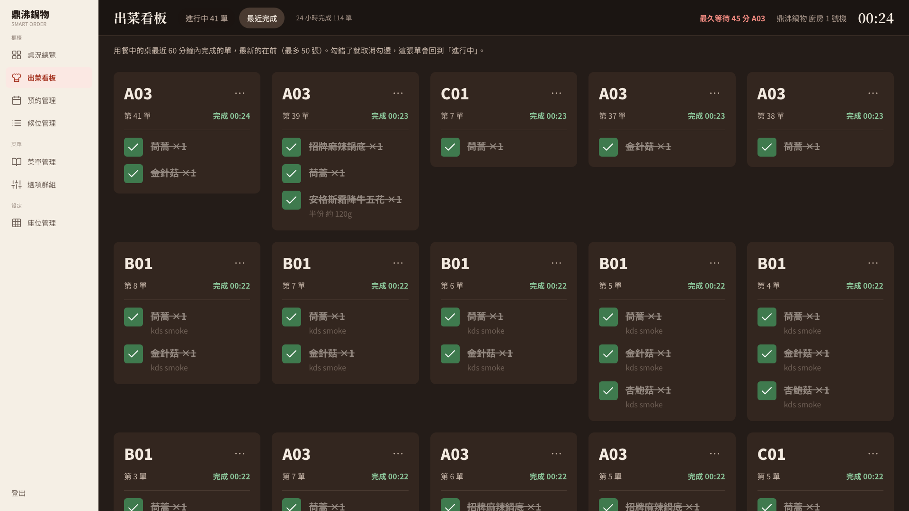

三個入口，三種改法，結果都不一樣
KDS（Kitchen Display System，廚房出菜看板）取代出單機紙條，一張卡片就是一張點餐單。資料庫分兩層：order_ticket（單，狀態 PENDING 待製作、PREPARING 製作中、SERVED 已出餐、CANCELLED 已取消）和 order_item（單裡每道菜，各自 PENDING／SERVED／CANCELLED）。M4 出菜看板規格要求單的狀態由品項算出來，不能手動設（單一真相來源：真正的資料只有品項）。但原本「勾一道菜」「整單完成」「取消一道菜」各自直接改資料，修正前實測：
兩個品項都已出餐，單還是 PENDING，卡片留在看板上，廚師得再按一次「整單完成」。
單變 SERVED，兩個品項卻還是 PENDING，客人手機的「本桌訂單」顯示「待製作」，菜明明已上桌。
另一道已出，單照理已全部完成，卻停在 PENDING，卡片收不掉。
規格 4.9 的報廢 API（Application Programming Interface，應用程式介面，PATCH /api/admin/order-items/{id}/waste）不存在，呼叫回 404。
客人那端也不即時：廚房事件只推到 /topic/kitchen，C-08「本桌訂單」只能每 15 秒重抓，畫面上的「即時同步中」卻是寫死的，斷線也照樣顯示。
一個推導元件，所有入口都呼叫它
第一版（commit 2d5574c）
- 推導規則只寫一次：新增
OrderTicketStatusUpdater.refreshFromItems()，依「沒被取消的品項」算單的狀態：全部已出 →SERVED（卡片淡出）、出一部分 →PREPARING、都沒出 →PENDING、全部取消或報廢 →CANCELLED。勾選、取消勾選、整單完成、報廢，以及櫃檯的「取消品項」（OrderCancellationService）全都呼叫它，狀態有變才寫入、才推播。 - 「整單完成」改成「把沒出的品項都標成已出」：同一個交易裡先標品項
SERVED再交給推導，客人和廚房看到的永遠一致；重複按也成功，已取消的單回409 TICKET_NOT_COMPLETABLE。 - 兩個廚師同時勾也要對：每條路徑先鎖這桌的用餐場次（
dining_session，SELECT … FOR UPDATE）再鎖單、品項，交易用READ_COMMITTED。同桌操作排隊，第二個人拿到鎖就讀得到第一個人剛存好的結果；大家都「先場次、再其他」，不會互等成死結。 - 出餐進度推給同桌每位客人：交易提交後（不是之前，免得推出去的事後又被取消），除了廚房頻道，也用
convertAndSendToUser("guest-{id}", "/queue/cart-updates", …)推給這桌的客人（ITEM_SERVED、ITEM_WASTED、TICKET_SERVED等六種事件）。訊息最外層不放sessionId：購物車頁聽同一個 queue，靠sessionId判斷「這是購物車變動」，不放才不會被誤認。 - C-08 真的即時：新增
useOrderProgressSocket，收到事件、同桌新單（ORDER_SUBMITTED）或結帳（SESSION_CLOSED）就重抓；連上或重連也重抓一次，因為 WebSocket 保證快、不保證不漏。「即時同步中」改看真實連線狀態，輪詢留作備援（連上 60 秒、斷線 15 秒）。 - 整合時補上的功能（不算原作者的缺失，依 M4 規格 4.1–4.12）：
- 報廢（4.9）只給廚房與店長，原因必填 1–100 字，寫成
CANCELLED加wasted_at，庫存不補回（食材已用掉），同交易重算帳單、報廢的菜不收錢；已結帳的桌、一般取消過的品項回 409。用「CANCELLED加時間」而不新增狀態，帳單、櫃檯明細、送單回應都不用改。 - 同一張單內「鍋底 → 菜盤 → 肉品」的出餐順序（4.7）、等超過 15 分鐘的紅框「久候」標籤（4.6）、深色看板與 40×40 勾選框（4.3、4.10、4.11）、勾選畫面先變再送 API（失敗就還原）、卡片淡出 0.5 秒、斷線提示。
- 報廢（4.9）只給廚房與店長，原因必填 1–100 字，寫成
審查後再修（commit 0e43f01、0cd7df6）
第一版獨立審查（依嚴重度分級，P1 最嚴重）沒有 P1／P2，P3 修在 0e43f01；整合者看截圖發現的圖示問題修在 0cd7df6。
- 舊版留下的錯誤資料：修正前的程式會留下「品項都出完、單還待製作」或「單已完成、品項還待製作」的單；新版只保證以後不再產生。所以升級腳本
migrate_order_item_waste.sql多做兩件事（只處理還在用餐中的桌）：把「單已完成、品項待製作」的品項補成已出餐，再用和推導元件相同的規則重算每張單。實測：先用修正前的後端做出三張錯單，連跑兩次腳本，三張都修好、重跑不出錯；已結帳桌次的資料前後 MD5（一種資料指紋）完全一樣，歷史資料沒被動到。 - 員工寫的原因不要推到客人手機：第一版把報廢、取消原因放在推給客人的事件裡，畫面不顯示，但開發者工具看得到「掉到地上」這種內部備註。現在客人版不帶原因。
- 重送報廢不誤報失敗：第一次報廢成功但網路逾時、畫面自動重送，若這桌剛好結帳，原本會先撞上「已結帳」回 409，畫面顯示失敗。現在鎖住這桌後先檢查「這道菜是否已報廢」，是就直接回成功。這種「送幾次結果都一樣」的性質叫冪等。
- 連續勾選不閃回：連勾 A、B，A 的重抓若比 B 先回來，B 會短暫變回沒勾。現在送出中的勾選疊在伺服器資料上，重抓完成才拿掉。
- 圖示（
0cd7df6）：C-08 的「已取消」「已退菜」沿用待製作的橘色時鐘，客人會以為還在做；改成淡灰色 ×。
誤勾可以救回來，退菜也知道是誰做的
commit 34b00e8，審查後的修正在 1756028。前面的已知限制收尾時補完：
最後一道菜一勾，卡片 0.5 秒淡出，找不到這張單。後端能撤回出餐卻沒有入口，查「最近完成」的 API 也不存在（404）。
頂列多了「進行中／最近完成」兩個分頁，列出還在用餐的桌最近 60 分鐘內完成的單（最多 50 張，最新在前），顯示「完成 HH:MM」；取消勾選某道菜，單就回到進行中。
- 完成時間用單內最後一道菜的
served_at最大值，不用updated_at（任何一欄被改都會變，意思不夠精確）。最近完成和進行中共用同一段查詢，出餐順序兩邊一樣。 - 已完成的卡片還能報廢：客人常在上完菜後才退菜，所以保留「報廢細項」，拿掉「取消訂單」「取消細項」。
一桌已結帳離開，廚房在那桌已完成的單上取消勾選：回 204，單被重新打開成「待製作」，走掉的客人又出現在看板上。
已結帳或取消的桌，撤回會讓已完成的單重新打開時回 409 SESSION_CLOSED；單還沒做完時照樣可撤回，因為那只是改正誤勾，不重開任何東西。
3. 報廢記錄是誰：報廢會讓帳單變少，所以 order_item 多了 wasted_by_staff_id（外鍵指向員工），從登入的員工 JWT（JSON Web Token，登入憑證）取得；重送保留第一次的紀錄。升級腳本 migrate_order_item_waste_staff.sql 可重複執行，舊紀錄維持空白（查不到是誰）。


已知限制的結果：出餐順序原本靠分類名稱「肉品」判斷，菜單管理能改名後會排錯，已改成分類的「出餐順序」欄位（見菜單管理文章的收尾補完）；最近完成和報廢員工見上。仍存在：4.8「預約優先」要有 M7 的預先點餐才會有這種單，這次不做。
數字與證據
2d5574c：出菜看板專項 102 項加基線 36 項，共 138 項 HTTP（Hypertext Transfer Protocol，超文字傳輸協定）與資料庫檢查全過，三個廚師同時勾、整單完成對取消各跑 3 輪，紀錄附修正前的觀察與升級腳本修補舊資料的實測；菜單管理、購物車、點餐交易、櫃檯代客點餐、結帳回歸（131、56、200、108、156 項）也過。HTTP 紀錄- 瀏覽器與 WebSocket 19 項全過：新單 1 秒內出現、勾選後 C-08 約 0.1 秒更新、別桌收不到事件、推給客人的報廢事件沒有原因。瀏覽器紀錄
34b00e8（含1756028）：新功能檢查加基線、瀏覽器檢查全過，相關回歸也過，獨立審查沒有 P1／P2。HTTP 紀錄、瀏覽器紀錄- 自己重做：兩道菜的單一道道勾完，修正前單還是
PENDING、修正後SERVED且卡片離開；報廢沒登入 401、櫃檯 403、原因空白或超過 100 字 400。測試在隔離的 MySQL 5.7 容器進行，「已結帳後重送報廢」直接改資料庫把場次設成已結帳模擬。


本篇真的用到的
- 狀態推導／單一真相來源：單的狀態只由品項算出（
OrderTicketStatusUpdater.java）。 - 悲觀鎖與固定鎖順序：先鎖
dining_session再鎖單、品項（KitchenTicketService.java）。 - 冪等：重送報廢回成功、保留第一次的紀錄。
- 交易提交後才發布事件（
afterCommit）與 Spring WebSocket／STOMP（Simple Text Oriented Messaging Protocol，簡單文字訊息協定）：廚房廣播頻道加客人個人 queue（KitchenNotificationService.java、useOrderProgressSocket.js）。 - React 樂觀更新：勾選先變畫面、失敗還原（
KitchenOverview.jsx）。 - 可重複執行的資料庫升級腳本：
migrate_order_item_waste*.sql。 - 學到什麼：一個東西的狀態是另一群東西的總結時，不要讓每個入口各自去改，寫一個推導方法讓所有入口呼叫。推播要交易提交後才推、重連要重抓；「即時同步中」一定要接真實連線狀態，寫死的比沒有更糟，因為它讓人相信錯的東西。
新手名詞表
- 資料列鎖與死結（deadlock）
- 資料列鎖（
SELECT … FOR UPDATE）讓別人要改同一列得排隊；死結是兩個請求各拿一把鎖又等對方的，固定上鎖順序可避免。 - 交易與 READ_COMMITTED
- 交易把一組資料庫操作當一次動作，全成功或全取消；
READ_COMMITTED是隔離層級，每次查詢都讀得到別人已存檔的最新結果。 - WebSocket 與 STOMP
- WebSocket 是一直開著的連線，伺服器可主動推訊息；STOMP 約定「訂閱哪個頻道、訊息長怎樣」。
- topic 與 queue
/topic/kitchen是大家都能訂閱的廣播頻道；/user/queue/cart-updates是每個人自己的信箱。- afterCommit、樂觀更新、migration
- afterCommit 是交易存檔成功後才做的事；樂觀更新是畫面先變、失敗再改回；migration 是把使用中的資料庫升級成新結構的腳本，可重複執行。
- C-08／S-04／M4
- C-08 是顧客端「本桌訂單」畫面，S-04 是店家端出菜看板畫面，M4 是出菜看板的模組規格。